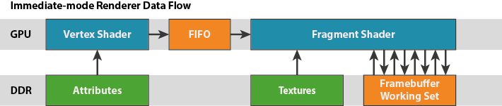
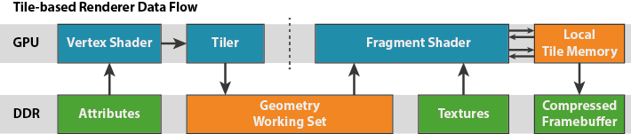

[译]The Mali GPU: An Abstract Machine, Part 2 - Tile-based Rendering
在我上一篇博文中，我定义了一台抽象机器，用于描述 Mali GPU和驱动程序软件对应用程序可见的行为。此机器的用意是为开发人员提供 OpenGL ES API 的一个生动形象的模型，而这反过来也可用于解释影响其应用程序性能的问题。我在本系列后面几篇博文中继续使用这一模型，探讨开发人员在开发图形应用程序时常常遇到的一些性能问题。
这篇博文将继续开发这台抽象机器，探讨 Mali GPU系列Tile-Based渲染模型。你应该已经阅读了关于管线化的第一篇博文；如果还没有，建议你先读一下。
The “Traditional” Approach
在传统的主线驱动型GPU架构中-通常称为立即模式（immediate）架构，片元着色器会按顺序的在每个图元、每次draw call上执行。每一个图元渲染结束后再开始下一个，算法伪代码如下：
1 | foreach( primitive ) |
由于任何一个stream中的三角形都可能覆盖屏幕中的任意一个区域，所以渲染器需要维护的数据会很大，一般至少需要屏幕大小的Color Buffer，Depth Buffer，也可能会有Stencil Buffer。现代设备通常是32 bits-per-pixel(bpp) Color,和32bpp的depth/stencil。一个1080p的屏幕就有16MB，一个4k2k的电视就有64MB。因为数据的大小，这些buffer必须存储在 off-chip in a DRAM（off-chip还没懂）。

每一次blend、depth test、stencil test都需要根据当前片元的坐标从frame buffer中取出数据。所有的片元都会跟frame buffer的数据交互，这样在高分辨率的设备中带宽会异常的高，每个片元都会有多次读写操作，尽管缓存能稍微减轻这个问题。这种对高带宽访问的需求又导致了对具有大量引脚的宽存储器接口的需求，以及专用的高频存储器，这两者都导致外部存储器访问，这是能耗非常高的。
The Mali Approach
Mali GPU系列采用完全不同的方式，通常叫做tile-based rendering，设计目的是减少渲染所需要的能耗巨大的外部内存访问。正如第一篇博客所说，Mali对每一个Render Target使用一个two-pass的渲染算法。它首先执行全部的几何处理，然后执行所有的片段处理。在几何处理阶段，Mali GPU把屏幕分成很多16x16像素的tile，然后构建一个每个tile包含的图元列表。当GPU的片元着色器开始处理时，每一个着色器核心一次处理一个16x16的tile，等它渲染完才开始下一个tile。算法如下：
1 | foreach( tile ) |
由于 16x16 区块仅仅是总屏幕面积的一小部分，所以有可能将整个tile的数据（颜色、深度和模板）存放在和 GPU 着色器核心紧密耦合的快速 RAM 中。

Tile-based Rendering有几个优点。它们对开发者几乎是透明的但也值得了解，尤其是想要去理解你的渲染的带宽消耗时：
所有对数据的访问都是本地访问，速度很快而且能耗低。读写外部DRAM的能耗会因为系统设计而不同，但是1 GByte/s大概有120mW。内部存储访问比这个的能耗低一个数量级，所以这很重要。
Blend速度快，能耗低，因为很多混合公式需要的目标颜色都能随时访问。（因为Blend发生在Tile Memory，混合完了才会写入外部的Frame Buffer）
一个tile很小，所以我们可以存储足够多的采样结果到tile memory来支持4x，8x和16x的multisample antialising。这能提供质量高开销低的抗锯齿。因为涉及的数据大小（一般单一采样渲染目标的 4、8 或 16 倍；4k2k 显示面板的 16x MSAA需要巨大的 1GB 数据），很少有立即模式的渲染器给开发者提供MSAA功能，因为外部内存的大小和带宽使它开销很高。
Mali只需要在每个tile处理完后把颜色数据写入frame buffer，这时我们知道它的最终状态。我们可以通过CRC check（一个叫做Transaction Elimination的技术）比较tile中的颜色和frame buffer的颜色，如果晾着颜色相同就会跳过写入，节省SoC能耗。我的一个同事tomolson写了一个关于这个技术的文章，并附有一个真实的例子。我将让汤姆的博客更详细地解释这项技术，但这里有一个技术先睹为快（只有“额外的粉红色”Tile是由GPU写入的 - 所有其他的都被成功丢弃）。

我们可以使用ARM Frame Buffer Compression(AFBC，一种快速，无损的压缩方式)来压缩tile的颜色数据来使带宽和能耗更低。这个压缩可以用在offscreen FBO，可以在后续的Pass中作为纹理读取，如果设备支持AFBC也可以用在主窗口surface，例如Mali-DP500。
大多数内容都有深度和模板缓冲，但是不需要在一帧渲染完后保留他们的数据。如果开发者告诉Mali驱动深度和模板缓冲不需要保留（通过调用glDiscardFramebufferEXT（OpenGL ES 2.0）或者glInvalidateFramebuffer（OpenGL ES 3.0）），那深度和模板数据就不会写回frame buffer。
从上面的列表中可以清楚地看出，Tile-based Rendering具有许多优点，特别是可以非常显着地减少与Frame buffer数据相关的带宽和功率，并且能够提供低成本的抗锯齿。 有什么缺点？
任何tile-based渲染方案的主要额外开销都是在顶点着色器到片元着色器这个点。几何处理阶段的输出（每个顶点的变量和这个tile的渲染状态），必须写到main memory然后在片元处理阶段重新读取。因此，在为顶点数据和tile渲染状态节省带宽，和为framebuffer数据节省带宽存在一个平衡。
在当今的现代消费电子产品中，都在转向更高分辨率的显示器; 智能手机普遍1080p，Mali-T604驱动的谷歌Nexus 10等平板电脑正在运行WQXGA（2560x1600），4k2k正在成为电视市场的新“必备品”。 屏幕分辨率以及帧缓冲带宽正在快速增长。 在这个领域，Mali真的很闪耀，并且以对应用程序开发人员来说最透明的方式这样做 - 您可以免费获得所有这些好东西而无需更改应用程序！
在几何方面，Mali也能处理好复杂度。许多高端基准测试正在接近每帧百万个三角形，其复杂度比 Android 应用商店中的热门游戏应用程序高出一个（或两个）数量级。然而，由于中间几何数据的确到达主内存，所以可以应用一些有用的技巧和诀窍，来优化 GPU 性能并充分发挥系统能力。这些技巧值得通过一篇博文来细谈，所以我们会在这一系列的后续博文中再予以介绍。
Summary
在这篇博客中我对比了桌面下立即模式的渲染器和Mali的tile-based渲染器，着重探讨了两种方式的内存带宽的影响。我将通过介绍 Mali 着色器核心本身的简单块模型，完成对这一抽象机器的定义。理解这部分内容后，我们就能继续介绍系列博文的其他有用部分：将这一模型应用到实践中，使其发挥实际作用，优化你在 Mali 上运行的应用程序。
备注：
- 具体有哪些多采样选项可用要视 GPU 而定。最近推出的 Mali-T760 GPU 最高支持 16 倍 MSAA。
- 对 EGL 窗口表面而言，深度丢弃与模板丢弃是自动执行的；但对于离屏渲染对象，它们可能会予以保留，供将来的渲染运算重新利用。